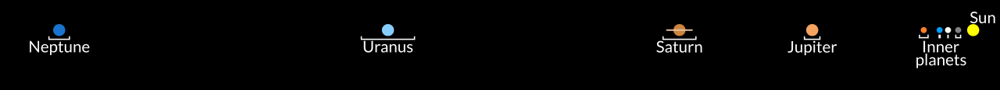
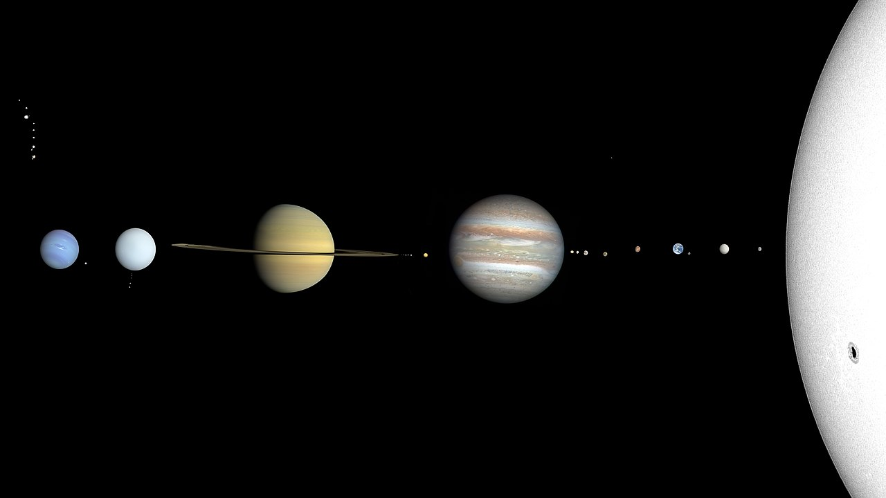

If Mercury competed in the Olympics, which Athletics event would it participate in?

Space: it's often called the final frontier. But just how much do we know about our incomprehensibly large universe? Turns out, it's a lot more and a lot less than you might think. We've captured an image of a possible galaxy that could be from as many as 13.5 billion years ago, and yet we still have only just begun to understand what dark matter is, much less dark energy, which combined make up over 90% of the mass of our universe.
So, join us today on a tour of the solar system, because while there are many mysteries of the universe that remain to be solved, we know a lot about our little corner of the galaxy. Before we start, though, let's see how much you've already learned.

Despite only being the second closest to the Sun, Venus is the hottest planet
If Earth wore a belt at the equator, about how many kilometers long would it have to be?
Mars is known as the red planet. Which of these reasons for its color is true?
Jupiter's moons were the first observed besides our own. How many are confirmed?
Although Saturn has the most iconic rings, it's not the only planetary ring system
Uranus likes to buck trends. What sets it apart from all the other planets?
Being the farthest from the Sun, Neptune has the lowest recorded temperature